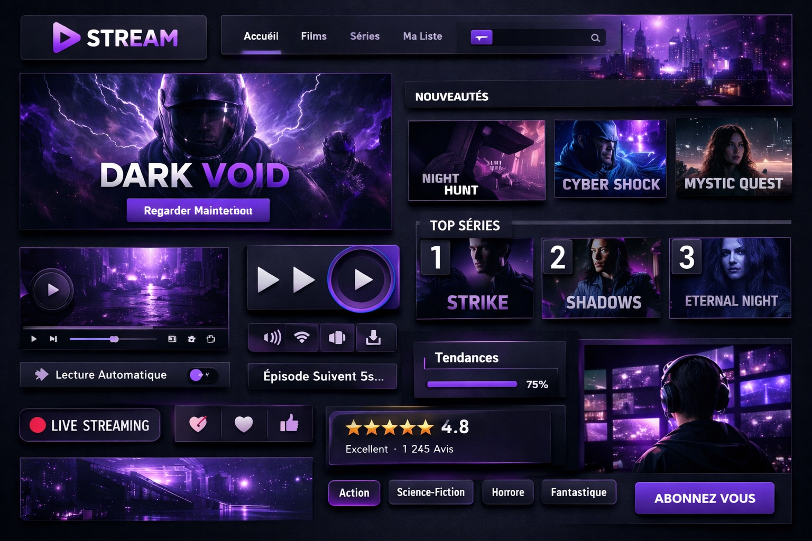

Contexte
Full-Movie est un projet personnel en cours de développement — un site de streaming dédié aux films. L'objectif est de concevoir une interface moderne, fluide et intuitive, inspirée des grandes plateformes comme Netflix ou Prime Video.
L'ambition : offrir une expérience de navigation immersive où l'utilisateur peut découvrir, rechercher et regarder des films depuis n'importe quel support.
Identité visuelle
Figma
Charte graphique — Full-Movie


Mon rôle
Identité visuelle
Figma
Création de la charte graphique complète : logo, palette de couleurs, typographies, iconographie. Univers sombre et cinématographique pour coller à l'ambiance d'une plateforme de streaming.
Maquette UI/UX
Figma — En cours
Conception des wireframes et de la maquette haute-fidélité : page d'accueil, catalogue films, fiche film, lecteur vidéo. Navigation pensée pour une expérience fluide et immersive.
Développement Front-end
React & Next.js — À venir
Intégration prévue en React avec Next.js pour le rendu côté serveur, les performances et le routing. Architecture des composants pensée dès la phase maquette.
Processus du projet
1
Recherche & Inspiration
· Benchmark
Analyse des plateformes de streaming existantes (Netflix, Prime Video, Disney+) pour identifier les patterns UI/UX efficaces : disposition du catalogue, hiérarchie visuelle, système de recherche et navigation.
2
Identité visuelle
· Figma
Création du logo, de la palette et de la typographie du projet. Univers visuel sombre et cinématographique — noir profond, rouge vif, typographies modernes — pour une identité forte et reconnaissable.
3
Maquette Figma
· Figma — En cours
Conception des écrans principaux : catalogue films, fiche détaillée,. La maquette haute-fidélité servira de référence complète pour le développement.